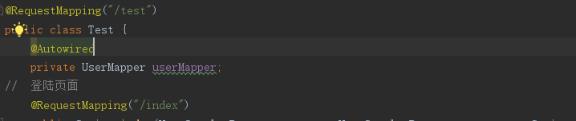
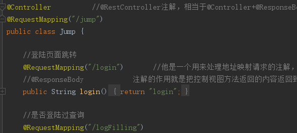
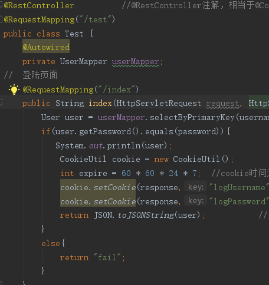
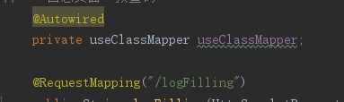

springboot的核心就是注解。springboot通过各种组合注解，极大地简化了spring项目的搭建和开发。采用纯java代码，不在需要配置繁杂的xml文件。类型安全对重构可以提供良好的支持。
@SpringBootApplication
@SpringBootApplication:包含了@ComponentScan、@Configuration和@EnableAutoConfiguration注解。
其中:
@ComponentScan：让spring Boot扫描到Configuration类并把它加入到程序上下文。
@Configuration ：等同于spring的XML配置文件；使用Java代码可以检查类型安全。
@EnableAutoConfiguration ：自动配置。
@RequestBody与@ResponseBody
//注意并不要求@RequestBody与@ResponseBody成对使用。
@RequestBody修饰请求参数，注解用于接收HTTP的body，默认是使用JSON的格式
@ResponseBody修饰返回值，注解用于在HTTP的body中携带响应数据，默认是使用JSON的格式。如果不加该注解，spring响应字符串类型，是跳转到模板页面或jsp页面的开发模式。说白了：加上这个注解你开发的是一个数据接口，不加这个注解你开发的是一个页面跳转控制器。
@ResponseBody可以用于写数据加载的接口时候用，但是注意不要混淆了，一个是请求头一个时响应头。两者默认是传输以及接受自动转JSON格式，前端可以直接调用
@RequestMapping注解
@RequestMapping注解是所有常用注解中，最有看点的一个注解，用于标注HTTP服务端点。它的很多属性对于丰富我们的应用开发方式方法，都有很重要的作用。
- value： 应用请求端点，最核心的属性，用于标志请求处理方法的唯一性；
- method： HTTP协议的method类型， 如：GET、POST、PUT、DELETE等；
- consumes： HTTP协议请求内容的数据类型（Content-Type），例如application/json, text/html;
- produces: HTTP协议响应内容的数据类型。下文会详细讲解。
- params： HTTP请求中必须包含某些参数值的时候，才允许被注解标注的方法处理请求。
- headers： HTTP请求中必须包含某些指定的header值，才允许被注解标注的方法处理请求。
1 | @RequestMapping(value = "/路径", method = POST) |
如果没有写method,应该是默认接受所有类型的。也就是PostMapping等同于@RequestMapping的method等于POST。同理：@GetMapping、@PutMapping、@DeleteMapping也都是简写的方式。

我比较习惯直接用，这样默认接受get或者post。
@RestController与@Controller
@Controller注解是开发中最常使用的注解，它的作用有两层含义：
一是告诉Spring，被该注解标注的类是一个Spring的Bean，需要被注入到Spring的上下文环境中。
二是该类里面所有被RequestMapping标注的注解都是HTTP服务端点。
@RestController相当于 @Controller和@ResponseBody结合。它有两层含义：
一是作为Controller的作用，将控制器类注入到Spring上下文环境，该类RequestMapping标注方法为HTTP服务端点。
二是作为ResponseBody的作用，请求响应默认使用的序列化方式是JSON，而不是跳转到jsp或模板页面。
总结来说就是，如果用的是Controller，接收到请求后返回的是一个跳转地址
比如说：

jump就是一个跳转地址，进入index接口后返回的是一个login.html页面地址
如果是RestController
就是为，接受到请求后，ResponseBody作用返回一个JSon数据
比如说：

进入/test,index接口后，会获取数据，结果返回的是一个Json字符串
@Autowired
我们编写spring 框架的代码时候。一直遵循是这样一个规则：所有在spring中注入的bean 都建议定义成私有的域变量。并且要配套写上 get 和 set方法。
Spring 2.5 引入了 @Autowired 注释，它可以对类成员变量、方法及构造函数进行标注，完成自动装配的工作。 通过 @Autowired的使用来消除 set ，get方法。Spring 通过一个 BeanPostProcessor 对 @Autowired 进行解析，所以要让 @Autowired 起作用必须事先在 Spring 容器中声明 AutowiredAnnotationBeanPostProcessor Bean。
具体使用详情：

@Autowired 将查找被标注的方法的入参类型的 Bean，并调用方法自动注入这些 Bean。